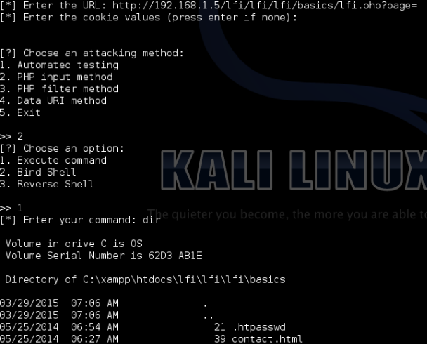

https://github.com/OsandaMalith/LFiFreak/ https://osandamalith.com/2015/03/29/lfi-freak/
Source: https://github.com/OsandaMalith/LFiFreak/
Windows Binary: http://www.mediafire.com/download/l07660857cqo9ur/LFI.exe
Linux Binary: http://www.mediafire.com/download/1m3a188637v3avo/lfi
LFI Freak

Features
Works with Windows, Linux and OS X
Includes bind and reverse shell for both Windows and Linux
Written in Python 2.7
What is this all about?
A unique tool for exploiting local file inclusions using PHP Input, PHP Filter and Data URI methods.
Dependencies
BeautifulSoup
Disclaimer
I am not responsible for any kind of illegal acts you cause. This is meant to be used for ethical purposes by penetration testers. If you plan to copy, redistribute please give credits to the original author.
Video: http://youtu.be/g0SHHV7DHx8
Follow Me: https://twitter.com/OsandaMalith
Creative Commons License
LFiFreak by Osanda Malith Jayathissa is licensed under a Creative Commons Attribution-NonCommercial-ShareAlike 4.0 International License.
Based on a work at https://github.com/OsandaMalith/LFiFreak/.